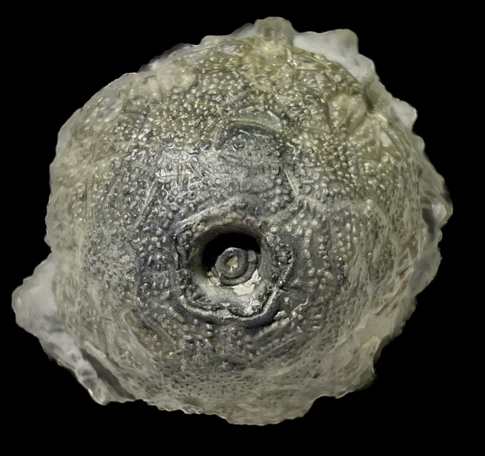
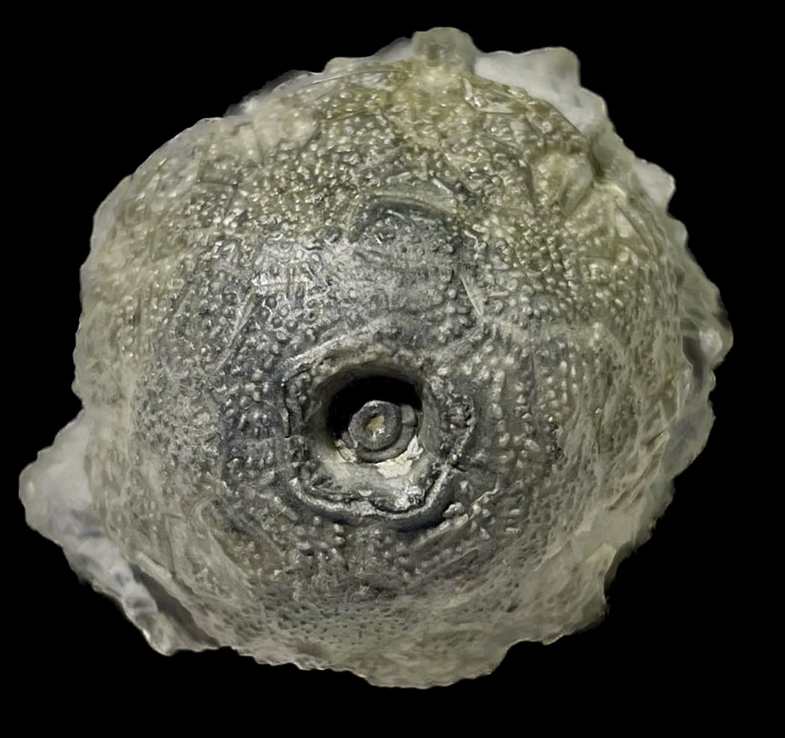

Eucalyptocrinus elrodi
Silurian
Waldron Shale
Clark Co., Indiana, USA
Size: 4.5 cm crown
This is a much rarer species of Eucalyptocrinus than E. crassus. The most notable difference is the strong pustular ornamentation adorning the crown. Unlike its common cousin, E. elrodi is quite rare from the Waldron, especially as crowns. The backside of this specimen lacks arms and shows the cage-like arm supports more clearly.
 
